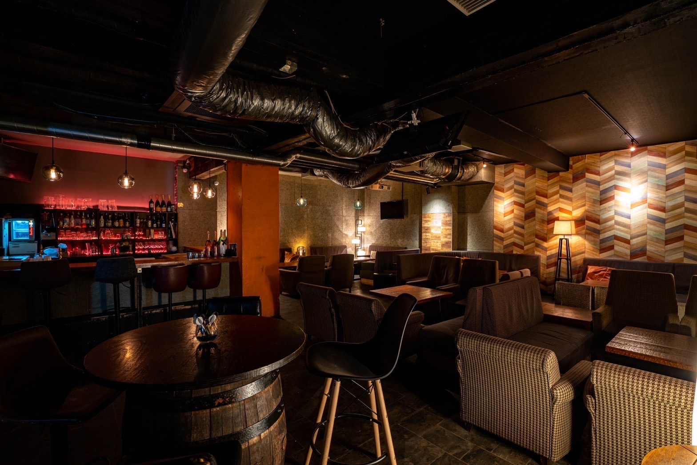

Thursday
毎週木曜日のごはんThursday Meals
木曜日の夜は、
ごはんもどうぞ。On Thursdays,
come hungry.
毎週木曜日は、お酒と一緒にお食事（ご飯）もお楽しみいただけます。
Every Thursday, enjoy a meal along with your drinks.
木曜日のご予約についてBooking for a Thursday
予約フォームで来店日に木曜日を選ぶと「お食事（ご飯）のご希望」を選択できます。
Pick a Thursday in the reservation form and you can tell us whether you'd like a meal.